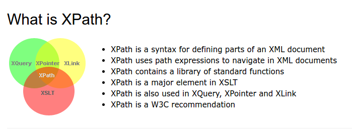
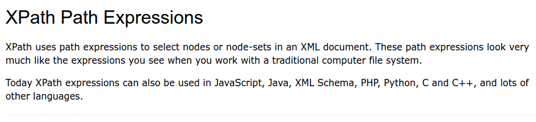
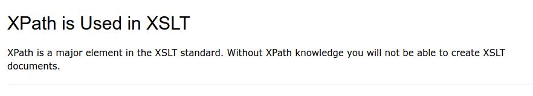
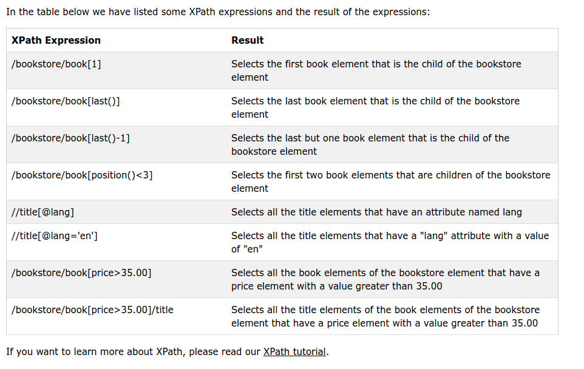

XPath (the XML Path language) is a language for finding information in an XML document.
apa itu xpath
Jalur ekspresi Xpath 
Xpath digunakan di XSLT
Contoh Expression dari Xpath / Ini digunakan untuk menselect data 